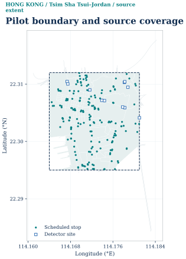
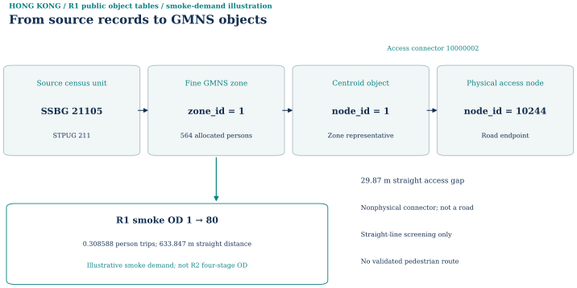
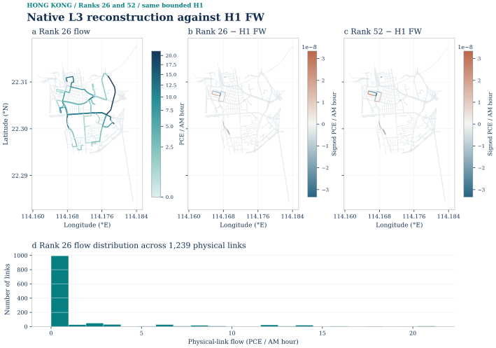
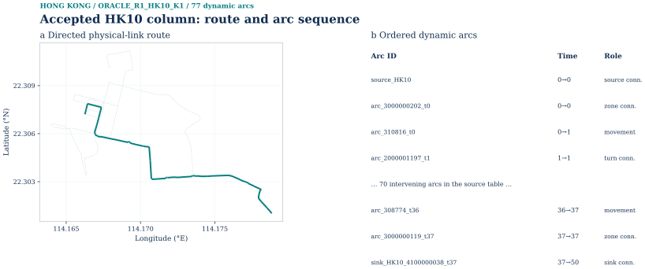
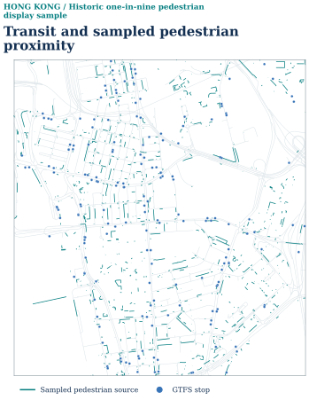

Complete reading edition · 2026-10-04. Source snapshot: 6ce18b8. The original long README, current case material and later accepted experiments are integrated here. Historical gates are labeled with their original instance and scope.
Case and instance boundaries
This bounded Tsim Sha Tsui–Jordan case links official-derived urban objects, an explicit four-stage engineering scenario, and several separately frozen optimization instances. The experiments below use modeled demand and graded input assumptions; none establishes a locally calibrated or full-territory traffic forecast.
| Instance | Physical and demand scope | Mathematical problem and accepted interpretation |
|---|---|---|
| R1 data pilot | 1,047 retained source road segments → 780 physical nodes / 1,239 directed physical links; 95 SSG fine zones / 10 STPUG parents | Object relationships and internal smoke/pilot demand seeds. Its saved assignment gate is false. |
| R2–R4 complete static scenario | Same physical geometry; 8,930 directed interzonal ODs; 723.191227885 PCE during 08:00–09:00 | Turn-aware BPR/Beckmann FW and Algorithm B on the complete modeled static OD set. |
| Corrected R2 H1 | 26 ODs / 126 legal paths; 52.17845064587021 PCE in one hour; 3,446 turn-expanded solver links | Accepted bounded low-congestion finite-path and native L3 transfer, with ranks 26 and 52. Not the complete static OD case. |
| Ten-OD finite R2/R4 graph, CG R5 | 100 selected physical nodes / 111 physical links; 11,954 dynamic nodes / 24,910 arcs; 30 s × 50 steps | Fixed-cost, hard-capacity LP, current CG and Lagrangian recovery. Independent 10/10 pricing closure passes. Frozen ten-OD ADMM R2 remains gated. |
| Fresh four-OD ADMM R3 | Same selected 111-link corridor, a separately frozen 4-OD graph; 11,942 dynamic nodes / 24,598 arcs; 10.84561943484106 PCE | Accepted bounded ADMM transfer in 165 iterations against its own arc-flow LP. It does not retrospectively accept ten-OD ADMM R2. |
The 1,047 source segments and 1,239 directed physical links describe different objects in the same R1-derived geometry, not a network-size revision. R2 changes assignment preparation, access selection, turn handling, speeds and capacities. Static Beckmann values, ten-OD fixed-cost objectives and four-OD objectives are compared only within their own frozen problem.
Top-down canonical Hong Kong case cover. The official-derived street network and 95 retained SSG zones define a bounded internal-demand study area; this is not a full-territory traffic model. See the consolidated Physical network and R2 access nodes.
Source records
See the numerical evidence and scope in the City covers section.
01 / Official sources and study boundary
Selected reproducible WGS84 polygon: rectangle west 114.164, south 22.295, east 114.181, north 22.312 (Tsim Sha Tsui–Jordan). pilot_boundary.geojson is the authoritative geometry. We screened both areas before any demand or assignment result. Each of ten criteria in PILOT_AREA_CANDIDATES.csv is scored 0–2; 2 means supported and manageable, 1 conditional, 0 not established.
TST–Jordan: 1,080 road centerline features, 810 screened endpoint nodes, largest weak component 780 nodes (96.3%), 98 intersecting SSGs, 183 GTFS stops, 10,622 CSDI pedestrian features and 11 detector sites. Its exact small UrbanNav ground-truth file could be checked privately. Score 19/20. Wan Chai–Causeway Bay: 1,433 road features, largest weak component 1,030 of 1,064 nodes (96.8%), 131 SSGs, 280 stops, 11,694 pedestrian features and 10 detector sites; no exact minimal reference trajectory was established in this screen. Score 17/20. Both have multiple road cycles and a meaningful external boundary; TST has lower data volume and one extra detector.
The selected graph retains only the largest weak road component: 780 physical nodes, 1047 original road segments, 1239 directed arcs and undirected cycle rank 268. The largest directed strongly connected component has 591 nodes; one-way access and turns are still routing limitations. 33 screened road records are quarantined with reason codes. Road features crossing the rectangle remain whole; no trips outside the pilot are generated. The demand scenario is internal-only, so the rectangle is an engineering boundary rather than a claimed complete regional travel market.
| Evidence layer | Source and use | Limit |
|---|---|---|
| Roads, posted limits and turns | Transport Department Road Network v2; source-derived physical links and legal movements | Free speed, lanes and period capacity are engineering transfers |
| Population and households | 2021 census SSG/STPUG geography and attributes | Allocation assumes uniformity within source polygons; no fine-zone survey |
| Building activity | Official CSDI footprint, storeys and names | Proxy attraction, not measured employment or GFA |
| Transit and walk | Transport Department GTFS, fares and official pedestrian links | Conservative routing with labeled fallback; no observed mode share |
| Road observations | Annual Traffic Census, detector snapshot and private UrbanNav reference | Descriptive/topology context, not held-out traffic validation |
The source register lists resource links, retrieval times, fields and hashes. Road, turn, GTFS and detector derivatives credit the Hong Kong SAR Government and Transport Department through DATA.GOV.HK; census and pedestrian source derivatives credit the Government, Census and Statistics Department/Lands Department and CSDI. See the attribution and redistribution review. Third-party source data are not relicensed by the project's software license.
The historical source and rights register records resource URLs, available SHA-256 hashes, evidence role and the earlier publication decision. Raw provider archives and complete point-level UrbanNav tables are excluded; one 12-point rendered projection has a separate narrow publication record. Phase A checkpoint · R1 historical pilot · Current case.
Attribution and distribution boundary. Road, turn, GTFS and detector derivatives credit the Hong Kong SAR Government and Transport Department through DATA.GOV.HK; census and pedestrian derivatives credit the Government, Census and Statistics Department/Lands Department and CSDI. These third-party sources are not relicensed by the software's MIT license. The saved rights review links provider terms and the UrbanNav license ambiguity. Census ZIPs were inspected but the model uses CSDI service polygons/attributes; provider archives, ROS/LiDAR/camera/RINEX and credentials are not included in the public package. R1 linked the TCS report without taking an aggregate table; later R2–R4 explicitly used its territory-wide coefficients, as described below. The original private UrbanNav point tables remain excluded, while the twelve-point rendered projection has a separate narrow public scope.



See the numerical evidence and scope in the Source data and preparation section.
02 / GMNS objects and assignment preparation
Physical roads, statistical zones, centroids, access arcs and movement states retain separate IDs and classes. The R2 preparation keeps R1 geometry and adds 1,896 allowed movement arcs as routing objects; these are not additional physical roads. Source features, directed links and allowed transitions must be counted separately.
| Layer | Saved scope | Interpretation |
|---|---|---|
| Physical network | 780 nodes, 1,239 directed links | Transport Department centerline-derived graph; direction and length retained |
| Zone hierarchy | 95 Census SSG fine zones, 10 STPUG parent zones | Source statistical polygons and model zones remain identifiable |
| Model access | 95 centroids, 190 nonphysical connector arcs | Centroid/access relationships; connectors are neither roads nor GPS-matchable |
| Transit | 183 GTFS stops, 294 route IDs | Stop-to-zone/network and route relationships, not a complete multimodal assignment |
| Detector evidence | 50 lane observations at 11 sites in one linked snapshot | Speed, 30-second volume and occupancy are measurements, not OD or calibrated link flows |
| Demography | 90,677.156 allocated persons; 36,228.315 households | 2021 census SSG estimates allocated by clipped-polygon area fraction |
The bounded Tsim Sha Tsui–Jordan graph is derived from Transport Department Road Network v2. Physical node/link IDs, directed movement, source turn rules and separate nonphysical centroid/access/turn classes are retained. The 95 fine SSG and 10 parent STPUG zones use 2021 census geographies. Assignment-ready compilation checks directed reachability, turns and grade separation; source intersection evidence is required for a mixed-elevation transition.
Transport Department Road Network v2 SPEED_LIMIT.gml is joined by source ROUTE_ID and covered segment length. Thirty directed pilot links have full posted-limit coverage; 18 have partial or transferred coverage. The remaining 1,191 use the official general 50 km/h legal limit rule. Posted speed is not free speed: all 1,239 model free speeds use the disclosed 0.8 engineering conversion factor, with 0.65/0.8/0.95 sensitivities. The posted-limit grade and model free-speed grade are separate columns in link_speed_evidence.csv. No detector speed was used as free speed. Sources: https://data.gov.hk/en-data/dataset/hk-td-tis_15-road-network-v2 and https://www.td.gov.hk/en/road_safety/road_users_code/index/chapter_5_for_all_drivers/how_fast_/index.html.
The official centerline, specification and route attributes contain no defensible observed lane-count field for the selected links. No lane count was inferred from line geometry. Strategic ROUTE_NUM links use a two-lane engineering scenario; unclassified urban links use one lane. Every lane evidence grade is ENGINEERING_PROXY; low/base/high alternatives are in LANE_POLICY_SENSITIVITY.csv. This is a capacity sensitivity, not an observed carriageway inventory. Source: https://data.gov.hk/en-data/dataset/hk-td-tis_15-road-network-v2.
The static analysis period is one hour. Base transferred engineering rules use 1,500 PCE/hour/lane on strategic routes and 500 PCE/hour/lane on unclassified urban links, multiplied by the proxy lane count. Volume is not interpreted as capacity. The rule is informed by Transport Department TPDM road-design context, not an exact Hong Kong link attribute: https://www.td.gov.hk/filemanager/en/content_5055/V2_03_2026.pdf and https://www.td.gov.hk/filemanager/en/content_5055/V4_03_2026.pdf. Low/base/high capacities are separately retained. The finite case converts hourly physical capacity to PCE per 30-second movement departure via capacity_hourly * 30/3600. Nonphysical turn/access/wait arcs do not contribute physical road flow.
Each directed physical link has an entry and exit state. A nonphysical zero-volume-class transition joins exit to entry only for accepted adjacent directed links. The 271 unique mapped prohibited turns are excluded. The R1 148 unresolved source features were classified: 145 redundant under one-way topology, two quarantined without an exact adjacent directed model transition, and one outside the accepted core. The official intersection layer supported all 73 mixed-elevation source-route transitions at actual endpoints; planar line crossings alone created no turns. Original physical IDs are retained, and every physical flow map filters out the turn and zone connector classes. Zone access selects ground-level nodes in the turn-aware strongly connected core; the maximum straight connector is 250.777 m. Barrier/water crossing remains unverified and is a stated limitation of this technical scenario.
Two source turn features were quarantined outside accepted directed transitions. SVG · Source record.

R1 access used nearest-endpoint straight-distance screening (maximum 208.4 m; one access over 200 m); its barrier check was incomplete. R2 selects ground-level nodes in the directed core and changes 9 of 95 access-node identities. The previous mapping remains in zone_access_r2.csv:
| Zone | Previous R1 access node | R2 access node | R2 straight distance (m) |
|---|---|---|---|
| 11 | 10231 | 10227 | 60.099 |
| 12 | 10286 | 10241 | 67.230 |
| 34 | 10472 | 10473 | 35.164 |
| 74 | 10310 | 10294 | 40.646 |
| 87 | 10700 | 10699 | 57.685 |
| 88 | 10400 | 10428 | 58.005 |
| 91 | 10663 | 10630 | 144.429 |
| 92 | 10663 | 10630 | 208.562 |
| 93 | 10706 | 10699 | 250.777 |
The R2 access distances are separate from the historical R1 screen. Neither is a validated pedestrian route. A deterministic R1 object query joins SSBG 21105 / STPUG 211 to fine zone 1 (564 allocated persons), centroid 1 and outbound nonphysical connector 10000002 to physical endpoint 10244 (29.87 m). Its smoke OD 1→80 is 0.3085884118 person trips at 633.847 m straight distance. This illustrates database relationships, not a computed vehicle route or the later four-stage demand.
See Physical network and R2 access nodes
See the numerical evidence and scope in the GMNS network, zones and access section.





Source records
- examples/hong-kong/gmns_pilot_r1/instance/link.csv
- examples/hong-kong/gmns_pilot_r1/instance/zone.csv
- docs/assets/hong_kong/full_stack_r5/r2r4_baseline/phase_a/zone_access_r2.csv
- docs/assets/hong_kong/full_stack_r5/r2r4_baseline/phase_a/instance/node.csv
- docs/assets/hong_kong/full_stack_r5/r2r4_baseline/phase_a/turn_aware_movement_edges.csv
See Physical network and R2 access nodes
See Physical network and R2 access nodes
03 / Population, households and activity
The 2021 CSDI Small Subunit Group attributes give source population and domestic households. For each of 95 included SSG polygons, the pilot allocates source values by its clipped-polygon area fraction. Three intersecting slivers below 1% of source area are excluded with reasons in instance/excluded_or_unknown_demand.csv. This assumes uniform within-SSG distribution and is an estimate of population inside the pilot. It is not an observed internal count. Allocated population = 90677.156; allocated households = 36228.315. The arithmetic conservation error per included source area is below 1e-7; the spatial allocation assumption remains uncertain.
This saved R2–R4 scenario is based on 95 fine SSG zones and 10 STPUG parents. The 2021 census geographies provide population and households, while official building footprints, storeys and name keywords supply activity proxies. Employment and official gross floor area were not observed. The source allocation, activity grades and exclusion ledger are in the public Phase B records.
These are separate prepared attributes; storey-weighted building activity is not a measured job count. SVG · Source record.

The saved zone activity table totals 90,677.156222 allocated persons, 36,228.315391 allocated households, 2,919 building records, 1,376,516.154009 m² footprint area and 9,066,445.827141 m² storey-weighted area proxy; 879 building records lack reported storeys. Employment remains unknown: blank working-population fields are not zero employment. The aggregate attraction-proxy score is 108,799.889516 in its model-defined units, not persons or observed jobs.
See the numerical evidence and scope in the Population, households and activity section.


See the numerical evidence and scope in the Population, households and activity section.
04 / Transit and pedestrian inputs
The public preparation links 183 GTFS stop locations and 294 route IDs to the physical network and zone hierarchy. Later generalized costs use same-trip GTFS rides, generic Monday service, headway waiting, exact published pair fares and pedestrian access. The conservative official 3D pedestrian subgraph is used where routable; straight-line fallback remains explicitly labeled. Scheduled service and proximity do not certify door-to-door travel or observed mode shares.
The historical R1 pedestrian illustration retains 1,181 displayed vector polylines (one in nine of the original source display), official roads and 183 stops. These published display coordinates support a historical illustration only; the raw pedestrian routing inputs are absent from the public package. The current GTFS stop map does not depict those sampled pedestrian polylines.


05 / Detector and trajectory evidence
The mandatory detector branch uses one TD live XML snapshot, with 50 lane records at 11 pilot sites. Ten sites have direction-screened physical-link candidates within 80 m; one remains unmatched and is never interpreted as zero flow. The source speed, 30-second lane volume, occupancy, timestamp, direction, validity code and detector ID are preserved. These are roadside detector measurements, not GPS points and not calibrated link flows.
Historical R1 trajectory association. The optional PolyU branch uses exactly the 140,442-byte UrbanNav_TST_GT_raw.txt linked under the Medium-Urban-1 TST dataset. This is a SPAN-CPT + IE ground-truth/reference position file, not raw receiver GNSS. It has 787 parsed one-second positions, 787 inside-pilot physical-link associations, median separation 5.472 m, p95 13.646 m, 11 explicit link continuity breaks, 0 time gaps over 2 seconds and 0 position-derived speeds over 40 m/s. Matching uses a local distance/motion/one-link continuity heuristic; it is not a validated lane-level path. The research vehicle is never used to infer general traffic demand. Raw and point-level derivatives stay private pending exact-file rights review.
Twelve saved SPAN-CPT+IE reference positions from one UrbanNav research vehicle, shown against frozen Viterbi matched links; no matching rerun, raw GNSS claim, traffic-demand inference or lane-level validation. The full point tables remain private. SVG · Source hashes and selection rule · Publication scope.

Observation evidence does not close an empirical validation gate: historical station AADT is not a one-hour directed-link count; the detector is a single snapshot; the 2021 UrbanNav SPAN-CPT+IE trace concerns one research vehicle and is not raw GNSS or representative traffic. Complete point-level tables remain private; one narrowly reviewed 12-point projection figure is public. Historical rights register · Figure publication scope · R5 result matrix.
The public detector map uses the 26 September 2026, 10:24:00–10:24:30 local-source snapshot. Its 50 lane rows, 11 sites, 81 annual ATC stations and 787 one-second reference positions have different count units and time supports. Grade separation at detector associations remains unverified. The twelve-point published Viterbi projection is a separately documented saved display; it does not replace the historical R1 heuristic QC statistics or release the complete point table. A combined GPS–detector point query cannot be reconstructed from the public aggregate evidence alone.


The 2023/2024 Annual Traffic Census contributes the 81-station AADT context; the 2026 thirty-second detector snapshot and 2021 research-vehicle positions are separate observation cohorts, not simultaneous validation samples.
06 / Trip generation and distribution
The 2022 Transport Department Travel Characteristics Survey final main report, Table 3.3 (p. 10), reports 1.69 weekday mechanised trips per person and purpose totals HBW 5.103m, HBS 1.162m, HBO 5.139m, NHB+EB 0.959m. Executive summary E.2.13 reports about 13% of daily mechanised trips in 08:00–09:00. These territory-wide values are transferred, not local estimates. Source: https://www.td.gov.hk/en/publications_and_press_releases/publications/free_publications/tcsfr/index.html
The assumed local/internal capture is 0.20/0.30/0.40 (low/base/high). The remainder is uncaptured or external and is retained in the ledger. Intrazonal demand is 5% of generated local trip opportunities and excluded from interzonal assignment. Production uses SSG population. Attractions are normalized purpose-specific building/activity proxies, not observed employment. Gravity uses exp(-β × turn-aware drive minutes), β=0.025/0.05/0.08 per minute, with IPF to balance rows and columns. No local impedance calibration is claimed.
The base 0.30-capture saved production/attraction table sums as follows. All quantities are modeled person-trip opportunities in the one-hour AM period; attractions are balanced margins, not job counts.
| Purpose | Generated opportunities | Intrazonal exclusion | Interzonal productions | Interzonal attractions |
|---|---|---|---|---|
| HBW | 2,466.896349 | 123.344817 | 2,343.551532 | 2,343.551532 |
| HBS | 561.734971 | 28.086749 | 533.648223 | 533.648223 |
| HBO | 2,484.299498 | 124.214975 | 2,360.084523 | 2,360.084523 |
| NHB + EB | 463.600548 | 23.180027 | 440.420521 | 440.420521 |
| Total | 5,976.531367 | 298.826568 | 5,677.704798 | 5,677.704798 |
Rounding here does not alter the full-precision saved records. R1 population-weighted smoke demand used different rates and is retained only in the historical section.


Directed OD distribution
Turn-aware road-time gravity and IPF balance each purpose across 95 origin and 95 destination zones. All 8,930 positive directed interzonal pairs are retained. The diagonal is excluded intrazonal demand, not missing interzonal observations; the OD visualization uses square-root color normalization while tick values retain person-trip units.
The margins and directed OD balance are saved in the distribution report. SVG · Source record.


Mode choice and one-hour road demand
Mode choice is a sensitivity-only multinomial logit. The base time coefficient is 0.07/min with constants drive=-1, transit=0, walk=0.5; variants are saved by OD. These coefficients are engineering choices. The TCS mechanised rate provides a trip-opportunity reference; introducing walk in the choice set is a counterfactual scenario, not an observed local all-mode total. Drive occupancy 1.5 persons/vehicle, PCE factor 1, 08:00–09:00 period are engineering assumptions. Transit costs use GTFS generic Monday service and exact published pair fares; walking costs use the conservative pedestrian subgraph with explicit fallback status. No local mode-share calibration or traffic forecast claim is made.
The saved mode-demand table gives drive 1,084.7868418275, transit 583.8658919036 and walk 4,009.0520645474 modeled person trips (approximately 19.1%, 10.3% and 70.6%). The displayed bars are absolute person trips with shares normalized by their sum, not generalized costs. Drive demand divided by the 1.5-person occupancy, with PCE factor 1, gives 723.191227885 PCE for the one-hour static assignment. Walk remains a counterfactual alternative to the transferred mechanised trip-opportunity reference.


See AM mode demand and normalized shares
See AM mode demand and normalized shares
07 / Static assignment on all 8,930 ODs


Source records
- docs/assets/hong_kong/full_stack_r5/r2r4_baseline/phase_b/mode_demand_by_od.csv
- Additional saved input: demand.csv; its public acquisition route remains subject to the reproduction audit.
- Additional saved input: OD_SELECTION_POLICY.json; its public acquisition route remains subject to the reproduction audit.
- Additional saved input: manifest.json; its public acquisition route remains subject to the reproduction audit.
- docs/assets/hong_kong/full_stack_r5/r2r4_baseline/phase_a/instance/zone.csv
- docs/assets/hong_kong/full_stack_r5/r2r4_baseline/phase_a/instance/link.csv


Source records
- docs/assets/hong_kong/full_stack_r5/r2r4_baseline/phase_b/mode_demand_by_od.csv
- Additional saved input: demand.csv; its public acquisition route remains subject to the reproduction audit.
- Additional saved input: OD_SELECTION_POLICY.json; its public acquisition route remains subject to the reproduction audit.
- Additional saved input: manifest.json; its public acquisition route remains subject to the reproduction audit.
- docs/assets/hong_kong/full_stack_r5/r2r4_baseline/phase_a/zone_access_r2.csv
- docs/assets/hong_kong/full_stack_r5/r2r4_baseline/phase_a/instance/node.csv
- docs/assets/hong_kong/full_stack_r5/r2r4_baseline/phase_a/instance/link.csv
- docs/assets/hong_kong/full_stack_r5/r2r4_baseline/phase_a/static_input/expanded_network_crosswalk.csv
The accepted assignment-ready graph retains 1,239 directed physical links, source turn restrictions and grade-separation quarantine. All 95 zones reach the selected strongly connected core, but straight zone-access proxies remain unverified for barriers and water. Posted speed limits have an official source; conversion to free speed, lane count and BPR capacity are engineering transfers, not observed link attributes. Phase A gate · Turn routing contract.
Static FW and official spartalab/tap-b Algorithm B were evaluated on identical turn-expanded links and 8,930 positive OD pairs. Hong Kong uses an accepted task-local lossless TAPLab-compatible adapter, not official TAPLab registered-adapter parity. The independent evaluator reports Beckmann objective 1,676.01213133 for both methods, maximum physical-flow difference below 1e-12 PCE, zero prohibited turns and zero OD imbalance. The modeled load is 723.191227885 PCE in one hour. Saved comparison · TAPLab/tap-b distinctions.
Modeled PCE under proxy BPR capacity, not a measured count map. SVG · Source record.

The saved independent check covers OD conservation and prohibited turns. SVG · Source record.

The redrawn FW and Algorithm B maps each read their own saved method vector. Their maximum physical-flow difference is approximately 8.53×10⁻¹⁴ PCE, consistent with the published below-1e-12 check; equality at display precision does not mean the methods share a mislabeled source file. The full static objective and H1 objective below belong to different demand instances.


Source records
- examples/hong-kong/gmns_pilot_r1/instance/link.csv
- Additional saved input: full_solution.csv; its public acquisition route remains subject to the reproduction audit.
- docs/assets/hong_kong/full_stack_r5/r2r4_baseline/phase_b/STATIC_ASSIGNMENT_COMPARISON.json
See the numerical evidence and scope in the Official tap-b Algorithm B section.
See Algorithm B physical-link flow
See Frank–Wolfe physical-link flow


Bounded H1 finite paths and Native Diagnostic L3
Public interpretation: ACCEPTED_BOUNDED_LOW_CONGESTION_TRANSFER. This corrected R2 result is on a frozen H1 static turn-aware BPR/Beckmann instance, not on all 8,930 Hong Kong ODs. Its 26 selected positive ODs carry 52.17845064587021 modeled PCE/hour; K=5 generated 126 legal simple paths. The exact H1 FW anchor, finite-path solution, and Native Diagnostic L3 ranks 26 and 52 share the same 3,446-link turn-expanded solver graph and 1,239 original physical links. Corrected R2 source and figure hashes · Figure manifest.
| Tier | Static path/L3 scope | Result boundary |
|---|---|---|
| H0 | 10 OD / 50 paths | Interface smoke only; no optimization result |
| H1 | 26 OD / 126 legal paths | Accepted bounded low-congestion finite-path and rank-26/52 L3 transfer |
| H2 | 100 OD / 492 paths | Path/resource preflight only; not solved |
| Full Hong Kong | 8,930 positive ODs | Finite-path / L3 not demonstrated |
The corrected singleton OD is zone 11 → 12, with one 13-edge legal simple path. Edge-removal reachability was revalidated: removing any edge disconnects that path. Zone 80 → 38 has five legal paths, not one. The saved basis metadata corresponds to minor-path incidence on the full 3,446-link turn-expanded solver-link graph, not physical-link-only incidence. Neither correction changes the saved numerical results.
| Same H1 static method | Recomputed Beckmann objective | Full-graph relative gap |
|---|---|---|
| Exact H1 FW anchor | 146.1326345614876 | −5.835×10⁻¹⁶ |
| Finite-path SLSQP | 146.13263456148755 | −5.835×10⁻¹⁶ |
| Native Diagnostic L3 rank 26 | 146.13263456485635 | 2.3052423×10⁻¹¹ |
| Native Diagnostic L3 rank 52 | 146.13263456485632 | 2.3052228×10⁻¹¹ |
The H1 instance is low-congestion: maximum physical v/c is 0.0425032874, and maximum BPR relative cost increase is about 4.8953×10⁻⁷. FW accepted its initial all-or-nothing flow at the declared tolerance with zero iterations; finite-path flow matches that H1 FW/f0 anchor at saved precision. Independent saved-result replay checked OD conservation, legal paths and turns, original-space reconstruction, physical-link projection, objective, and full-graph gaps. Thus the result validates bounded transfer and reconstruction, not a nontrivial route-splitting compression stress test, rank sensitivity, speedup, or full-city scalability. The accepted full Hong Kong FW/Algorithm B objective is a different 8,930-OD static instance and is not the H1 reference.
Distribution and support of the accepted H1 finite-path physical-link vector. SVG · Source hashes.

H1 26-OD / 126-path reconstructed physical-link flow and support. The low-congestion finite solution equals its H1 FW/f0 anchor at saved precision; modeled PCE, not observed traffic or a full-city result. SVG · Current consolidated figure.


Distribution of saved H1 rank-26 physical-link flow and its difference from the same-instance FW anchor. SVG · Source hashes.

Rank-26 original-space reconstruction and physical-link difference on H1. The declared checks pass; minor-path flow totals 8.43×10⁻⁸ PCE. This low-congestion result is not a route-splitting compression stress test. SVG · Current consolidated figure.


Rank-52 original-space reconstruction and physical-link difference on the same H1 pool. The declared checks pass; minor-path flow totals 9.97×10⁻⁸ PCE. The rank comparison does not establish sensitivity or speedup. SVG.

Recomputed objectives for H1 FW, finite-path, rank 26 and rank 52 on one frozen static instance. Objective agreement is one part of the checks; the accepted interpretation remains bounded low-congestion transfer, supported also by independent full-graph gaps and reconstruction checks. SVG · Corrected R2 source record.

This static BPR/Beckmann objective must not be numerically compared with the later fixed-cost, hard-capacity finite space–time objective. Neither static result is a validated traffic forecast. Case landing.
The finite-path vector has 300 physical links above 1e-6 PCE. The rank-26 and rank-52 maps use the same symmetric difference scale; their maximum absolute physical-flow differences from the H1 FW anchor are approximately 2.2629676e-8 and 3.3374331e-8 PCE, respectively. Nonzero differences are retained, rather than rounded to identical flow. The basis acts on the full 3,446-link incidence, and the plotted map is its physical-link projection.
See Finite-path reference and physical support

Source records
- Additional saved input: link_flow.csv; its public acquisition route remains subject to the reproduction audit.
- Additional saved input: link_flow.csv; its public acquisition route remains subject to the reproduction audit.
- Additional saved input: paths.csv; its public acquisition route remains subject to the reproduction audit.
- Additional saved input: link.csv; its public acquisition route remains subject to the reproduction audit.
See Native L3 reconstruction against H1 FW
What this comparison checks. Native Diagnostic L3 solves a reduced path representation and reconstructs flow on the original physical links. The saved Frank–Wolfe result on the same H1 26-OD, 126-path instance is a numerical reference for that reconstruction. The maps show reconstructed flow and reconstruction error; they do not establish an algorithm ranking or a speedup. The low-congestion bounded case does not establish performance on the full city demand.


Source records
- Additional saved input: link_flow.csv; its public acquisition route remains subject to the reproduction audit.
- Additional saved input: link_flow.csv; its public acquisition route remains subject to the reproduction audit.
- Additional saved input: paths.csv; its public acquisition route remains subject to the reproduction audit.
- Additional saved input: link.csv; its public acquisition route remains subject to the reproduction audit.
- Additional saved input: basis.npz; its public acquisition route remains subject to the reproduction audit.
- Additional saved input: outer_03_solution.npz; its public acquisition route remains subject to the reproduction audit.
- Additional saved input: status.json; its public acquisition route remains subject to the reproduction audit.
- Additional saved input: basis.npz; its public acquisition route remains subject to the reproduction audit.
- Additional saved input: outer_03_solution.npz; its public acquisition route remains subject to the reproduction audit.
- Additional saved input: status.json; its public acquisition route remains subject to the reproduction audit.
See Native L3 reconstruction against H1 FW
08 / Fixed ten-OD finite space–time case
Case selection used positive Phase B demand, a shared static bottleneck, alternate routes, directed reachability and a declared size gate before any Hong Kong dynamic solver result. The 10-OD selected core contains 111 physical links, 11,954 dynamic nodes and 24,910 arcs at 30-second steps over 25 minutes. Physical movement capacity is hourly PCE multiplied by 30/3600. Turns and zone access are zero-time nonphysical arcs; waiting consumes time. The 15/30-second rounding and route-order audit is saved.
The unchanged HK_TST_JORDAN_10OD_30S_50STEPS_R2_R4 case has 11,954 dynamic nodes, 24,910 arcs, ten demands, 30-second steps, 50 steps, and the exact original K=1 seed signature 663f62669debfac29eb130194e4a4f5e9f2b0576c8c41aaeb3b053bec61a2481. Its model signature is 552877e54d71851891a8dc23a4d08fd14d1e6719ff60267713200912f0ef4847.
| Independent method or check | Accepted result on this same finite graph |
|---|---|
| Arc-flow reference LP | 75.03632985794819 vehicle-minutes; demand/capacity and physical-ID mapping checks pass |
| Current two-phase CG R5 | Phase I artificial flow 4.350218719795723 → 0 in 12 rounds; Phase II adds three columns and reaches approximately 75.03632985794835 vehicle-minutes |
| Independent full-DAG pricing | Closure passes 10/10 demands at 1e-6; minimum ungenerated reduced cost is numerical zero; no continuation column is required |
| Lagrangian R3 | Separate restricted-path recovery is feasible at the reference objective; independent duality gap 0.7444% |
| ADMM R2 | Gated: first local commodity QP has 0.082467622 PCE original-unit conservation residual; zero accepted outer iterations and no accepted objective |
Reference-objective agreement and independent pricing closure are distinct statements. The early R5 Phase-II summary predates the separate closure stage and is not the final certificate. Final result matrix · Independent closure certificate · Closure-by-demand table.
See the numerical evidence and scope in the Two-phase column generation section.
See the numerical evidence and scope in the Two-phase column generation section.
Physical links, routing states and time-indexed arcs
The CG example solves a finite space–time linear flow model with fixed arc costs and explicit capacities. This is distinct from static BPR/Beckmann assignment. The layered view uses the approved HK10 model-generated column excerpt, separating physical roads from road-entry/exit routing states and zero-time turn connectors.
Source-grounded local excerpt; one time step is 30 seconds. Highlighted movements are arc_308368_t26 and arc_667532_t27, joined by the saved zero-time turn. The full path arrives at t37; its sink at t50 is bookkeeping. This is a model-generated path, not an observed trajectory. Editable SVG · Source record · Displayed arcs · Exact HK10 derived disclosure record.

Source-matched R2 reconstruction from saved records. SVG · Exact figure sources · Full caption.

Two connected Austin Road physical links are shown with their saved turn-aware node-time movement, zero-time turn and waiting arcs over indices 0–3. Layout coordinates are schematic; link IDs, state IDs, arc types and times come from the unchanged 30-second finite graph. The highlighted permitted chain is not an exported CG column or observed trajectory. Physical hourly capacity becomes departure-arc PCE per 30-second step on the full graph; this construction is separate from static BPR assignment. Editable SVG · Source record and exact IDs · Earlier aggregate construction graphic.


See Local construction of the time-expanded graph


Saved column and computational context
The restricted master enforces shared time-arc capacities. No separate cross-OD exchange is claimed for this excerpt. Physical road links 308368 and 667532 traverse original intersections 10468 → 10513 → 10526; a routing turn connector is not another physical road. The construction supports the same column-generation workflow: Phase I restricted master ↔ time-network pricing; add selected columns and re-solve; Phase II minimizes real path cost and compares with the same-instance arc-flow LP reference. The redraw makes no numerical optimization or new certificate claim.


See the numerical evidence and scope in the Network construction and generated columns section.
See Local construction of the time-expanded graph
See Local construction of the time-expanded graph
See the numerical evidence and scope in the Network construction and generated columns section.
See Local construction of the time-expanded graph
One accepted generated column
One actual positive-flow Phase-II R5 model-generated column, ORACLE_R1_HK10_K1, carries 0.8352150831808043 PCE. It contains 77 ordered arcs: 37 movement, 36 turn, two zone, one source and one sink. The specifically approved excerpt and source record are available; full pools, dual/state arrays and raw observations remain excluded.
The complete ordered column comprises 37 movement arcs, 36 zero-time turn arcs, two zone arcs, one source and one sink; it contains no waiting arc. Physical arrival is t37 = 18.5 minutes, while the terminal sink at t50 is bookkeeping. The displayed local Austin Road movements arc_308368_t26 and arc_667532_t27 are part of this accepted column. Routing entry/exit states are not original road intersections. Only movement arcs map to physical roads; display positions are schematic while arc IDs, states and times come from saved records. The column is CG evidence, not a reference-LP path or UrbanNav observation. Approval is specific to the 77-arc excerpt and its listed derivatives, not the full pool or dual/state arrays.



Phase I: restore real-path feasibility
Artificial flow 4.350218719795723 PCE reaches zero after 12 rounds. Total and by-demand traces remain below.

Exact-DAG pricing clears 4.350218719795723 artificial PCE by round 12 on the original ten-demand case. SVG · Source record.

All ten demands have zero final Phase-I artificial flow; the initial deficit was concentrated in three demands. SVG · Saved trace.

Not demonstrated as a specific before/after cross-OD shared-capacity event in the accepted R5 public record. The complete LP and CG still share capacity constraints; no event is invented for symmetry.
Initial artificial demand is concentrated in HK03, HK05 and HK07. The retained total curve and demand-by-round heatmap show every saved round without smoothing; all ten commodities finish at zero. This establishes restricted-master feasibility, separately from objective quality and pricing closure.

See Phase I feasibility recovery
See Phase I feasibility recovery
See Phase I feasibility recovery
Phase II: improve the real-path objective
The saved Phase-II objective trace contains two solved restricted-master states and one effective objective update, within two attempted rounds:
| Saved solution / round | Pool columns | Objective (vehicle-minutes) | Objective − own-graph LP | Added columns |
|---|---|---|---|---|
| 0 / 0 | 22 | 75.07523596555359 | 0.03890610760539914 | Initial real-only master after Phase I |
| 1 / 1 | 25 | 75.03632985794832 | 1.2789769243681803e-13 | ORACLE_R1_HK05_K1, ORACLE_R1_HK08_K1, ORACLE_R1_HK10_K1 |
Both saved states are optimal restricted-master solves with zero reported demand residual and no capacity violations. The same-graph arc-flow LP is 75.03632985794819 vehicle-minutes. The final CG summary reports 75.03632985794835, and independent replay reconstructs 75.03632985794826; these are separately saved/recomputed values agreeing at numerical precision, not different scientific instances. Three columns were added. No multi-step convergence claim is inferred from this single effective update. Full-DAG pricing closure remains a separate certificate.
See the numerical evidence and scope in the Two-phase column generation section.
See the numerical evidence and scope in the Two-phase column generation section.
Independent pricing closure and saved-result replay
Independent full-DAG pricing closure passes 10/10 demands at 1e-6; final public RMP has 25 columns. Certificate and by-demand table.
All ten demands pass the minimum ungenerated reduced-cost gate. The independent complete-DAG evaluator makes no optimizer call. SVG · Redacted certificate · Solver-free public verifier.

The final public RMP has 25 columns. A solver-free audit reconstructs objective 75.03632985794826 vehicle-minutes and checks zero demand/capacity residual within 1e-6, model/seed signatures, result lineage and original physical-link projection. Private route sequences, full generated pools and dual arrays are excluded from the public projection. Public verifier · Model freeze.
All six focused current-stack regressions passed. Five required accepted source hashes and model/seed identities matched. No accepted source was repaired; the R5 scripts only adapt paths, render saved results and package evidence. The legacy 50,000-state Phase-I enumerator was not active. R1 and R2–R4 protected hashes were unchanged.


See Independent pricing closure
Movement-only physical-link projection
Accepted movement-arc flow maps to all 111 selected physical-link IDs, with 69 positive modeled flows. Public R5 physical map. Nonphysical turn/zone/source/sink arcs are not road flow.

Accepted time-indexed movement arcs only are aggregated by persistent directed physical-link ID. The finite 30-second × 50-step horizon yields accumulated PCE, not an hourly rate or an observed count. All 111 selected links remain in the map and 69 have positive modeled movement flow; nonphysical turn, zone, source and sink arcs contribute no road flow. Original aspect and physical identity are preserved. The five-field cross-city audit retains unavailable released quantities as “not reported,” never numerical zero. This is the ten-OD CG result, distinct from four-OD ADMM's 58-link positive support.
| Projection audit field | Released value |
|---|---|
| Physical links | 111 |
| Positive-flow links | 69 |
| Mapping failures | Not reported in public evidence |
| Reconstruction residual | Not reported in public evidence |
| Flow units | Modeled PCE over the finite horizon |
Five-field source record. Unreported quantities are not interpreted as zero.
See the numerical evidence and scope in the Two-phase column generation section.

See Final physical-link movement flow
Same-graph LP and Lagrangian bounds


Source records
- Additional saved input: history.csv; its public acquisition route remains subject to the reproduction audit.
- Additional saved input: result.json; its public acquisition route remains subject to the reproduction audit.
- Additional saved input: lagrangian_evaluation.json; its public acquisition route remains subject to the reproduction audit.


Source records
- Additional saved input: best_multipliers.csv; its public acquisition route remains subject to the reproduction audit.
- Additional saved input: result.json; its public acquisition route remains subject to the reproduction audit.
- Additional saved input: lagrangian_evaluation.json; its public acquisition route remains subject to the reproduction audit.


Source records
- Additional saved input: recovery_history.json; its public acquisition route remains subject to the reproduction audit.
- Additional saved input: result.json; its public acquisition route remains subject to the reproduction audit.
- Additional saved input: lagrangian_evaluation.json; its public acquisition route remains subject to the reproduction audit.
On the unchanged ten-OD finite graph, the independently checked arc-flow LP reference is 75.03632985794819 vehicle-minutes. Frozen Lagrangian R3_CONTINUATION yields a dual bound of 74.47774508486323 vehicle-minutes. Separate restricted-path recovery yields a feasible primal of 75.03632985794827 vehicle-minutes, with certified relative primal–dual gap 0.0074441910224354625 = 0.74441910224354625%.
The independent Lagrangian evaluation reports 14 positive paths, 69 positive physical links, zero balance/capacity residual, zero flow-reconstruction error and physical-projection error 3.552713678800501e-15 PCE. Its primal-to-LP relative difference is 1.136317946954869e-15. Multipliers range from 0 to 0.5067147227817049, and the capacity subgradient norm is 3837.8606910211493. The maximum priced-path capacity violation (2.8017406409100625 PCE) belongs to the dual pricing path, not the independently feasible recovered primal. Replay makes zero optimizer calls.
LP, CG and recovered Lagrangian primal therefore agree on objective within numerical precision, but this does not establish identical path, time or link flows. Ten-OD ADMM R2 has no accepted objective in this comparison. The independent four-OD R3 result uses a different reference and is reported below.
See the numerical evidence and scope in the Arc-flow LP reference section.
See the numerical evidence and scope in the Lagrangian section.
See the numerical evidence and scope in the Lagrangian section.
Ten-OD ADMM gate and scope of R3 development
The frozen ADMM R2 transfer remains gated at its first original-unit local conservation check, before accepted outer iterations. Its saved gate figure and result record are historical and were not converted into an accepted run.

Seen diagnostic versus fresh transfer. The older ten-OD case was development evidence, not a fresh holdout: frozen R2 reproduced its first-commodity local-conservation gate before any consensus update (HK02; maximum sweep residual 0.0824676217948368 PCE; zero completed outer iterations). Under R3 its first local-sweep maximum residual fell to 9.881961204882828e-8 PCE; that repair is not described as an untouched transfer. The accepted four-OD cohort was selected by an input-only rule frozen before optimization. The corridor offered only two eligible destination nodes under the preregistered concentration caps, yielding four records rather than ten. This small destination-constrained cohort is a numerical transfer case, not representative citywide demand.
09 / Independent four-OD ADMM R3 transfer
Status: ACCEPTED_BOUNDED_HONG_KONG_ADMM_TRANSFER. This is a fresh, separate finite shared-capacity instance with four preregistered modeled OD/departure records totaling 10.84561943484106 PCE, 30-second steps, a 50-step horizon, 11,942 dynamic nodes and 24,598 arcs. Fixed arc costs, commodity conservation and shared hard capacities define the problem; its numerical reference is the same-graph arc-flow LP. It is not static BPR/Beckmann user equilibrium.
Generic solver revision. “ADMM R3” is a local-QP robustness revision of the accepted R2_S solver stack; frozen result metadata still uses inherited full_arc_consensus_admm_r2 and R2_S labels. R3 retains the R2_S splitting, input-derived fixed rho rule, original-unit gates and 300-iteration ceiling. When active-set Newton leaves the original-unit conservation target unmet, the L-BFGS dual solve may restart at most twice under the same per-call limits. There is no Hong Kong-specific OD, node or arc branch, graph or demand change, rho adjustment, relaxed gate, outer-cap change or reference-LP warm start. All 10/10 previously accepted R2 cases passed replay and R3 regression.
The same-graph arc-flow LP objective is 32.98334567386431 vehicle-minutes and the accepted ADMM objective is 32.98357085525667 vehicle-minutes (LP-relative difference 6.82712404596396e-6) after 165 outer iterations. Independent saved-state replay reports maximum original-unit local balance 2.500753781831122e-8 PCE, primal residual 0.002848612438462572 against threshold 0.008489148518508037, dual residual 0.0023563401757695636 against threshold 0.0031531019531220567, and maximum capacity excess 5.025538873937307e-10 PCE. ADMM and LP have identical 58-link positive physical-flow support; RMSE is approximately 1.294e-8 PCE and maximum absolute difference approximately 6.371e-8 PCE. Public metrics · Package provenance.
Independent checks. Saved-state replay made zero optimizer calls and checked input identity, frozen source hashes, R2 regressions, the independent LP reference, stopping, original-unit conservation, local KKT, primal/dual residuals, capacity, projection and scaled-dual update, objective recomputation, and movement-to-physical-link back-projection. The frozen wall-time check and movement-flow identity check also passed; no unreleased thresholds are inferred. Five deliberate corruptions—saved objective, forbidden flow, capacity excess, consensus projection and demand identity—were all detected.
Matched three-panel view: recorded primal/dual residuals and gates; the dimensionless log10 of |ADMM objective − LP| divided by one vehicle-minute; and the original physical-link flow comparison with LP on x and ADMM on y (PCE). All 111 selected links are plotted, including zeros; 58 have positive flow in each solution. Coincident markers are not jittered. Source and input hashes. The accepted bounded four-OD scope is unchanged.


Source records
- Additional saved input: history.csv; its public acquisition route remains subject to the reproduction audit.
- Additional saved input: ADMM_R3_FROZEN_POLICY.json; its public acquisition route remains subject to the reproduction audit.
- Additional saved input: HK_ADMM_R3_INDEPENDENT_CHECK.json; its public acquisition route remains subject to the reproduction audit.
- Additional saved input: ARC_FLOW_REFERENCE_SUMMARY.json; its public acquisition route remains subject to the reproduction audit.
Evidence

Each saved ADMM objective is compared with the independent arc-flow LP on the exact same graph. The ordinate is log10 of absolute objective difference measured relative to one vehicle-minute; 1e-15 vehicle-minute is the numerical display floor. The error trajectory is unsmoothed and differs from conservation/primal/dual residuals. Objective agreement does not imply identical physical-link flow. See the consolidated ADMM convergence and objective agreement.
Source records
- Additional saved input: history.csv; its public acquisition route remains subject to the reproduction audit.
- Additional saved input: ARC_FLOW_REFERENCE_SUMMARY.json; its public acquisition route remains subject to the reproduction audit.
Evidence


Source records
- Additional saved input: HK_ADMM_R3_PHYSICAL_FLOW_COMPARISON.csv; its public acquisition route remains subject to the reproduction audit.
- Additional saved input: selected_physical_links.csv; its public acquisition route remains subject to the reproduction audit.
- Additional saved input: HK_ADMM_R3_INDEPENDENT_CHECK.json; its public acquisition route remains subject to the reproduction audit.
Evidence


Source records
- Additional saved input: state.npz; its public acquisition route remains subject to the reproduction audit.
- Additional saved input: dynamic_arc.csv; its public acquisition route remains subject to the reproduction audit.
- Additional saved input: dynamic_demand.csv; its public acquisition route remains subject to the reproduction audit.
- Additional saved input: ADMM_R3_FROZEN_POLICY.json; its public acquisition route remains subject to the reproduction audit.
Evidence


Road geometry in the derived public visuals is attributed to Hong Kong Transport Department, Road Network v2. This bounded modeled-demand result does not establish full 8,930-OD Hong Kong assignment, observed-OD calibration, empirical GPS representativeness, traffic validation or a general ADMM convergence theorem. The raw/private state, histories and provider source files are not part of this public asset set.
Diagnostic units and display rules. Commodity balance, primal consensus and capacity residuals are measured in PCE. The frozen dual residual is rho times the norm of the consensus update and therefore has cost-per-vehicle units; it is displayed separately, against its own stopping threshold. Balance and capacity gates are 1e-5 PCE. Residual plots use an explicitly labeled 1e-13 floor in the respective units for exact zeros. The objective-error ordinate is log10 of the absolute objective difference relative to one vehicle-minute, with a 1e-15 vehicle-minute display floor; the unsmoothed final error is approximately 2.2518e-4 vehicle-minutes. The conservation heatmap uses the 35 nodes with the largest residual over any commodity, from 1e-15 to the inherited 1e-5 PCE gate. These are display conventions, not changes to the saved state or acceptance criteria.
The two absolute movement-flow maps share one PCE scale, while the signed ADMM-minus-LP map uses a zero-centered symmetric scale. All 111 selected physical links, including zeros, remain in the comparison. Identical 58-link positive support does not imply exact equality of numerical flows. These four-OD maps must not be substituted for the ten-OD CG projection with 69 positive links.
See the numerical evidence and scope in the ADMM section.
See the numerical evidence and scope in the ADMM section.
See the numerical evidence and scope in the ADMM section.
See ADMM convergence and objective agreement
See ADMM and LP physical-link flow
The shared solver and replay protocol documents the common implementation boundary. City-specific acceptance here is supported by the four-OD metrics and replay above.
10 / Public data, computation and reproduction
Current experiment-by-experiment reproduction register
A successful numerical check is scoped to the exact recipe and preserved input state. It does not establish a complete source-to-result replay for every city workflow. Open the complete 108-record reproduction inventory for data acquisition, source versions, environments, exact commands, output tolerances and recorded verification receipts.
The unified recipes and complete computational checkout are prepared for review. They have not been published to GitHub. Public source links and frozen result records retain their original release status.
| Experiment / instance | Current status | Scope and remaining requirements | Run evidence |
|---|---|---|---|
GMNS R1 physical network, zones and access relationshipsInstance contractR1: 780 physical nodes, 1,239 physical links, 95 SSG / 10 STPUG and 190 nonphysical access edges | Saved evidence checked; fresh recipe unavailable | 31 checks of existing object relationships passed; the duplicate-link negative control was rejected. These checks validate prepared outputs and trace objects, but do not rebuild R1 from raw government data. R1 access/proximity results are distinct from the R2 turn-aware network prepared for assignment. Remaining: Prepared road and zone tables are public; raw-provider snapshot acquisition and redistribution have not been integrated. | Recipe and checks |
R2 turn-aware network, road parameters and physical accessInstance contract1,239 physical links / 3,446 turn-expanded solver links; 95 zones and 8,930 reachable directed interzonal pairs | Saved evidence checked; fresh recipe unavailable | The prepared graph and policies are public. The basic validator reads the checkpoint for the Phase A acceptance check; it does not independently rebuild or reroute all 8,930 pairs. Speed and capacity are engineering assumptions; straight-line access does not establish actual barrier-free reachability. Remaining: Turn-aware compilation source recovered; exact R1 provider extracts and pilot intersection records are not a public end-to-end input package. | Recipe and checks |
Area allocation of 2021 population and households to 95 fine zonesInstance contractSSG/STPUG attributes and clipped zones; area-allocated totals of 90,677.15622225715 people and 36,228.31539105156 households | Saved evidence checked; fresh recipe unavailable | CSDI attributes and polygons are used by the model. The census2021 SSUG ZIP was inspected only and must not be identified as the same input used to calculate the model values. Uniform area allocation is not a fine-zone survey. Remaining: Population allocation code recovered; complete immutable original provider attributes and clipped geometries remain acquisition work. | Recipe and checks |
Activity proxy from building footprint area × storeys and name classificationInstance contract2,953 source buildings: 2,919 allocated and 34 unallocated; 895 records lack storey counts | Saved evidence checked; fresh recipe unavailable | The output is an attraction proxy, not measured employment or official GFA. Current validation checks the source hashes and summaries of existing figures; it does not rebuild the building proxy. Remaining: Per-building private allocation tables are explicitly excluded; do not copy them. Public aggregate activity input is usable downstream. | Recipe and checks |
GTFS AM direct rides, fares, waiting and walking generalized costsInstance contractGeneric Monday 08:00–09:00; 294 routes, 843 ride edges and 2,745 same-trip pairs; 26,315 walking queries | Saved evidence checked; fresh recipe unavailable | Prepared costs are downloadable. The default Monday is an engineering service definition, not an observed date. R1 proximity must remain distinct from R2 conservative pedestrian routing. Remaining: Raw GTFS/provider files were excluded from the public candidate; exact snapshots and preparation CLI remain to be wired. | Recipe and checks |
Short detector snapshot and association with historical ATC stationsInstance contractA single 30-second snapshot of 11 detectors / 50 lane rows; 2023/2024 AADT at 81 ATC points | Saved evidence checked; fresh recipe unavailable | Spatial association and descriptive AADT, not calibration of model AM traffic volumes or held-out validation. Remaining: Code recovered; historical detector snapshot has no verified immutable public download. | Recipe and checks |
UrbanNav single research-vehicle trace projection and turn validityInstance contractTST reference trace; limited public display and aggregate QC, not a travel OD sample | Saved evidence checked; fresh recipe unavailable | Reference and topology context from one research vehicle cannot serve as a traffic calibration sample. The narrowly scoped public record for a 12-point rendered projection does not release the full point table. Remaining: Raw/per-point UrbanNav remains private pending exact-file license confirmation; not copied. | Recipe and checks |
Four-stage trip generation and sensitivity to 0.20/0.30/0.40 captureInstance contract95 zones / 4 purposes; low/base/high local AM trip opportunities of 3984.354/5976.531/7968.708 | Fresh computation and verification passed | Generation totals include low/base/high capture; only base capture and base impedance run through IPF. Mode probabilities include low_drive/base/high_drive, with base mode demand. No raw acquisition or observed calibration claim. | Recipe and checks · Verification receipt |
Gravity / IPF trip distribution at baseline 0.30 captureInstance contract4 purpose × 8,930 directed interzonal pairs；5,677.704798278519 person trips AM | Fresh computation and verification passed | Generation totals include low/base/high capture; only base capture and base impedance run through IPF. Mode probabilities include low_drive/base/high_drive, with base mode demand. No raw acquisition or observed calibration claim. | Recipe and checks · Verification receipt |
Engineering logit mode choice and one-hour PCE inputsInstance contract8,930 OD pairs; low-drive/base/high-drive probabilities; baseline 723.1912278850218 PCE/hour | Fresh computation and verification passed | Generation totals include low/base/high capture; only base capture and base impedance run through IPF. Mode probabilities include low_drive/base/high_drive, with base mode demand. No raw acquisition or observed calibration claim. | Recipe and checks · Verification receipt |
Static Frank–Wolfe · Phase A smokeInstance contractPhase A smoke：475 OD，24.18057499260191 modeled PCE/hour；3,446 solver links | Fresh computation and verification passed | Phase A population-proxy modeled demand; not the Phase B four-stage or H1 finite-path experiment. | Recipe and checks · Verification receipt |
Static Algorithm B · Phase A smokeInstance contractPhase A smoke：475 OD，24.18057499260191 modeled PCE/hour；3,446 solver links | Fresh computation and verification passed | Phase A population-proxy modeled demand; not the Phase B four-stage or H1 finite-path experiment. | Recipe and checks · Verification receipt |
Static Frank–Wolfe · Phase A pilotInstance contractPhase A pilot：475 OD，604.5143748150477 modeled PCE/hour；3,446 solver links | Fresh computation and verification passed | Phase A population-proxy modeled demand; not the Phase B four-stage or H1 finite-path experiment. | Recipe and checks · Verification receipt |
Static Algorithm B · Phase A pilotInstance contractPhase A pilot：475 OD，604.5143748150477 modeled PCE/hour；3,446 solver links | Fresh computation and verification passed | Phase A population-proxy modeled demand; not the Phase B four-stage or H1 finite-path experiment. | Recipe and checks · Verification receipt |
Static Frank–Wolfe · Phase B smokeInstance contractPhase B smoke：10 OD，50.854571492000076 modeled PCE/hour；3,446 solver links | Fresh computation and verification passed | Historical Phase B tier only; not H1 finite-path/L3, Phase A proxy demand, measured traffic, or dynamic time-expanded assignment. | Recipe and checks · Verification receipt |
Static Algorithm B · Phase B smokeInstance contractPhase B smoke：10 OD，50.854571492000076 modeled PCE/hour；3,446 solver links | Fresh computation and verification passed | Phase B base four-stage one-hour modeled demand; not measured OD or H1 finite-path. | Recipe and checks · Verification receipt |
Static Frank–Wolfe · Phase B mediumInstance contractPhase B medium：1000 OD，486.16552469770807 modeled PCE/hour；3,446 solver links | Fresh computation and verification passed | Historical Phase B tier only; not H1 finite-path/L3, Phase A proxy demand, measured traffic, or dynamic time-expanded assignment. | Recipe and checks · Verification receipt |
Static Algorithm B · Phase B mediumInstance contractPhase B medium：1000 OD，486.16552469770807 modeled PCE/hour；3,446 solver links | Fresh computation and verification passed | Phase B base four-stage one-hour modeled demand; not measured OD or H1 finite-path. | Recipe and checks · Verification receipt |
Static Frank–Wolfe · Phase B fullInstance contractPhase B full：8930 OD，723.1912278850218 modeled PCE/hour；3,446 solver links | Fresh computation and verification passed | Historical Phase B tier only; not H1 finite-path/L3, Phase A proxy demand, measured traffic, or dynamic time-expanded assignment. | Recipe and checks · Verification receipt |
Static Algorithm B · Phase B fullInstance contractPhase B full：8930 OD，723.1912278850218 modeled PCE/hour；3,446 solver links | Fresh computation and verification passed | Phase B base four-stage one-hour modeled demand; not measured OD or H1 finite-path. | Recipe and checks · Verification receipt |
H1 · exact H1 FW anchorInstance contractFrozen H1: 26 OD / 126 paths / 52.17845064587021 PCE/hour / 3,446 solver links | Replay blocked by stated requirements | Results and figures are published, but this audit could not solve again from the same public inputs or replay the complete state. Congestion is low, with max v/c 0.0425; the initial FW AON met the threshold at 0 iterations. L3 validates reconstruction in the original space; it does not establish speedup, citywide scale or a nontrivial path-splitting stress test. Remaining: The corrected R2 source and exact H1 inputs/results have been located. Finite/rank26/rank52 saved results pass local independent replay. The private Full numerical payload has not been copied into the public candidate. | Recipe and checks |
H1 · finite-path SLSQPInstance contractFrozen H1: 26 OD / 126 paths / 52.17845064587021 PCE/hour / 3,446 solver links | Replay blocked by stated requirements | Results and figures are published, but this audit could not solve again from the same public inputs or replay the complete state. Congestion is low, with max v/c 0.0425; the initial FW AON met the threshold at 0 iterations. L3 validates reconstruction in the original space; it does not establish speedup, citywide scale or a nontrivial path-splitting stress test. Remaining: The corrected R2 source and exact H1 inputs/results have been located. Finite/rank26/rank52 saved results pass local independent replay. The private Full numerical payload has not been copied into the public candidate. | Recipe and checks |
H1 · Native L3 rank 26Instance contractFrozen H1: 26 OD / 126 paths / 52.17845064587021 PCE/hour / 3,446 solver links | Replay blocked by stated requirements | Results and figures are published, but this audit could not solve again from the same public inputs or replay the complete state. Congestion is low, with max v/c 0.0425; the initial FW AON met the threshold at 0 iterations. L3 validates reconstruction in the original space; it does not establish speedup, citywide scale or a nontrivial path-splitting stress test. Remaining: The corrected R2 source and exact H1 inputs/results have been located. Finite/rank26/rank52 saved results pass local independent replay. The private Full numerical payload has not been copied into the public candidate. | Recipe and checks |
H1 · Native L3 rank 52Instance contractFrozen H1: 26 OD / 126 paths / 52.17845064587021 PCE/hour / 3,446 solver links | Replay blocked by stated requirements | Results and figures are published, but this audit could not solve again from the same public inputs or replay the complete state. Congestion is low, with max v/c 0.0425; the initial FW AON met the threshold at 0 iterations. L3 validates reconstruction in the original space; it does not establish speedup, citywide scale or a nontrivial path-splitting stress test. Remaining: The corrected R2 source and exact H1 inputs/results have been located. Finite/rank26/rank52 saved results pass local independent replay. The private Full numerical payload has not been copied into the public candidate. | Recipe and checks |
Static path/L3 H0 scope recordInstance contract10 OD / 50 paths | No accepted computational experiment | Interface smoke only; no optimization result. This records the experimental boundary and cannot count as an accepted optimization reproduction. H0/H2 contain saved interface/resource preflight records; the complete execution package is not public. | Recipe and checks |
Static path/L3 H2 scope recordInstance contract100 OD / 492 paths | No accepted computational experiment | Path/resource preflight only; not solved. This records the experimental boundary and cannot count as an accepted optimization reproduction. H0/H2 contain saved interface/resource preflight records; the complete execution package is not public. | Recipe and checks |
Static path/L3 FULL scope recordInstance contract8,930 OD | No accepted computational experiment | Finite-path / L3 not demonstrated. This records the experimental boundary and cannot count as an accepted optimization reproduction. H0/H2 contain saved interface/resource preflight records; the complete execution package is not public. | Recipe and checks |
HK10 finite time-expanded graph and demand constructionInstance contractFrozen HK_TST_JORDAN_10OD_30S_50STEPS_R2_R4: 10 OD, 30-second × 50-step horizon, 24,910 arcs, fixed linear costs and shared hard capacities; distinct from full 8,930-OD static BPR and HK4 ADMM R3. | Saved evidence checked; fresh recipe unavailable | The public final graph CSVs can be used for computation. Hash, physical-mapping and forward-time checks passed in this audit; this does not rebuild the graph from raw city data. Remaining: Graph compiler recovered; source-only generator integration from public static inputs is a possible next step, not yet validated here. | Recipe and checks |
HK10 multicommodity arc-flow LP on the same graphInstance contractFrozen HK_TST_JORDAN_10OD_30S_50STEPS_R2_R4: 10 OD, 30-second × 50-step horizon, 24,910 arcs, fixed linear costs and shared hard capacities; distinct from full 8,930-OD static BPR and HK4 ADMM R3. | Fresh computation and verification passed | Calls the unchanged public solve_small_subset_arc_lp function with the frozen HK10 input. Independent verification reconstructs original-unit conservation, shared capacity and objective from its exported positive flows (>1e-8), then compares the public same-graph scalar reference. It does not create a new dual/pricing-closure certificate, reproduce an identical optimal flow split, run CG/ADMM, or represent the separate accepted HK4 R3 case. | Recipe and checks · Verification receipt |
Historical HK10 CG R2–R4: Phase I blockedInstance contractFrozen HK_TST_JORDAN_10OD_30S_50STEPS_R2_R4: 10 OD, 30-second × 50-step horizon, 24,910 arcs, fixed linear costs and shared hard capacities; distinct from full 8,930-OD static BPR and HK4 ADMM R3. (Historical run with the old oracle/seed.) | Saved evidence checked; fresh recipe unavailable | The saved result is PHASE_I_BLOCKED, artificial flow > 0, and Phase II was not run. The later accepted R5 result belongs to an explicit revision; the historical record must not be removed or relabeled as successful. Remaining: Historical failed Phase I branch recovered, not a successful R5 run. Full historical seed/route state remains receiver-only. | Recipe and checks |
HK10 R5 two-phase column generationInstance contractFrozen HK_TST_JORDAN_10OD_30S_50STEPS_R2_R4: 10 OD, 30-second × 50-step horizon, 24,910 arcs, fixed linear costs and shared hard capacities; distinct from full 8,930-OD static BPR and HK4 ADMM R3. (R5 DAG pricing and phase-II degenerate progression.) | Saved evidence checked; fresh recipe unavailable | R5 receiver PASS validates aggregates, hashes and certificates in the public projection, with optimization_invocations=0. Preflight exits 0 but reports run_status=SAFE_BLOCKER; this is not a successful fresh CG solve. The saved result clears Phase I artificial flow, adds 3 Phase II columns, and reaches 75.03632985794835, matching the same-graph LP. CG was not solved again in this audit. Remaining: Exact accepted R5 source, K1 seed and final pool/dual state have been located; full pricing closure replay passes locally. Current public material explicitly excludes the original seed, detailed routes and duals. A downloadable public execution package has not been assembled. | Recipe and checks |
HK10 R5 independent full pricing closureInstance contractFrozen HK_TST_JORDAN_10OD_30S_50STEPS_R2_R4: 10 OD, 30-second × 50-step horizon, 24,910 arcs, fixed linear costs and shared hard capacities; distinct from full 8,930-OD static BPR and HK4 ADMM R3. (Saved final 25-column pool + dual.) | Saved evidence checked; fresh recipe unavailable | This certificate is an independent validation step, not another optimization algorithm. Public PASS in this audit does not mean independent pricing closure was rerun; the public objective_recomputed field comes from the certificate. Remaining: Exact accepted R5 source, K1 seed and final pool/dual state have been located; full pricing closure replay passes locally. Current public material explicitly excludes the original seed, detailed routes and duals. A downloadable public execution package has not been assembled. | Recipe and checks |
HK10 Lagrangian R3 continuation and independent primal recoveryInstance contractFrozen HK_TST_JORDAN_10OD_30S_50STEPS_R2_R4: 10 OD, 30-second × 50-step horizon, 24,910 arcs, fixed linear costs and shared hard capacities; distinct from full 8,930-OD static BPR and HK4 ADMM R3. R3_CONTINUATION, 25 iterations, 43 columns. | Fresh computation and verification passed | HK10 R3 fixed-cost finite-capacity Lagrangian experiment. Distinct from R2 P07, HK4 ADMM and static BPR/Beckmann. Starts from the publicly available frozen graph; raw-data-to-graph preparation is outside this command. | Recipe and checks · Verification receipt |
Historical HK10 ADMM R2_S failure boundaryInstance contractFrozen HK_TST_JORDAN_10OD_30S_50STEPS_R2_R4: 10 OD, 30-second × 50-step horizon, 24,910 arcs, fixed linear costs and shared hard capacities; distinct from full 8,930-OD static BPR and HK4 ADMM R3. Original frozen R2_S, with no accepted outer iteration. | Original acceptance boundary remains failed | The public code and inputs are executable, and a fresh calculation and independent replay were performed. The first local-QP conservation gate failed, with outer=0. The saved residual is 0.0824676217948368; the fresh residual is 0.09470163124516517, a difference of 0.012234009450328376. The scientific failure boundary agrees, but the numerical values differ. Exit 2 is the original solver status NOT_CONVERGED. Exit 0 from the audit replay wrapper confirms the expected FAIL; it does not mean the gate passed. Remaining: Historical failure remains separate from HK4 accepted transfer; exact frozen R2 source located. | Recipe and checks |
Independent HK4 ADMM R3 accepted bounded transferInstance contractNew 4-OD finite graph; 30-second × 50-step horizon; 165 ADMM outer iterations (distinct from HK10) | Replay blocked by stated requirements | The published accepted result and metrics are retained. This audit cannot reproduce R3 from the public data and public R2 code. The new 4-OD graph differs from the historical 10-OD graph; HK10 failure and HK4 success must not be presented as an improvement on the same graph. Remaining: The exact HK4 R3 source, policy, graph and saved state have been located and independently replayed locally. The numerical handoff is private; it has not been copied into the public candidate. | Recipe and checks |
Frozen implementation notes and earlier availability statements
These retained source notes describe their original release snapshot and historical verification scope. Current recipe availability, verification receipts and remaining requirements are listed above; the older notes do not override that register.
The currently linked packages support inspection, relationship tracing and independent replay of saved evidence. This is narrower than downloading sources and recomputing every displayed result from scratch. The current documentation must not describe the latter standard as already met.
| Component | Publicly linked material and code | Reproduction boundary |
|---|---|---|
| R1 GMNS pilot | instance and README, source register, validate_pilot.py, trace_pilot.py | Offline schema/relationship tests; original official extraction scripts and source snapshots are not all in this example. |
| R2–R4 preparation/static/LP/Lagrangian | baseline manifest, verify_public_bundle.py, Phase A/B tables and static comparison | Saved acceptance and provenance checks; a verifier is not an end-to-end scientific solver pipeline. |
| Ten-OD current CG R5 | verify_receiver_r5.py, R5 manifest, aggregate traces and redacted pricing certificate | Full initial/generated pools and dual arrays remain receiver-only; the specifically approved 77-arc HK10 example is a bounded exception. |
| H1 finite-path / native L3 | corrected figure manifest, saved metrics, source hashes and reconstruction evidence | H0 is interface smoke, H2 is preflight, and full 8,930-OD finite/L3 is not demonstrated. |
| Four-OD ADMM R3 | public metrics and package provenance linked with the result | Raw/private state and iteration history are not a complete public rerun package. |
No optimizer is invoked by this editorial consolidation. Missing raw inputs or solver-entry packaging remains a code/data audit task; no unavailable record is represented as a completed computation.
From examples/hong-kong/gmns_pilot_r1 with Python 3.12+:
python -B validate_pilot.py --instance instance
python -B trace_pilot.py --instance instance --zone 1 --detector AID05111 --stop 193
These commands check saved object relationships and trace one zone, detector and stop. They do not rebuild the official extraction or solve assignment. All five self-contained SVG views, object dictionary, and network limitations remain available for audit.
visuals/index.html links the five self-contained public SVG figures. validate_pilot.py --fixture duplicate_link must exit 1; the other fixtures are bad_connector and bad_demand. No network request is needed to inspect the saved result. Rebuilding the original scientific extraction requires source snapshots and preparation scripts that are not in this public candidate; the public reproduction scope is offline validation and relationship tracing. UrbanNav point-level data remain excluded.
python -B docs/assets/hong_kong/full_stack_r5/r2r4_baseline/verify_public_bundle.py --root docs/assets/hong_kong/full_stack_r5/r2r4_baseline
python -B docs/assets/hong_kong/full_stack_r5/verify_receiver_r5.py
The baseline verifier checks the original 18 historical full-stack figures, source hashes, static acceptance, original-space LP feasibility, Lagrangian recovery and the historical R2–R4 CG/ADMM gates. The second verifies the current public R5 package inventory, the original 26 figure entries and sidecars, frozen model identity, Phase I/II saved results, 10/10 independent pricing closure, and redaction of private route pools and dual arrays. The historical gate is superseded for CG only; ten-OD ADMM R2 remains gated. Current case · Finite results.
This projection contains the unchanged R2–R4 public bundle, R5 aggregate traces and figures, and a redacted closure certificate. Original K=1 seed columns, the full generated pool and duals are confined to internal receiver review; one later specifically approved HK10 77-arc example is publicly documented. Run python -B verify_receiver_r5.py for aggregate checks.
The exact-file R5 bundle manifest preserves the accepted R2–R4 public candidate under r2r4_baseline/ and adds only approved aggregate CG evidence. Its old gated CG text is historical R2–R4 evidence, superseded by R5; it is not the current Hong Kong CG status. The original R1 pilot remains a separately dated data checkpoint, not the assignment gate for this later case.
11 / Historical scope and superseded gates
R1 is a historical data checkpoint. Its saved assignment gate is assignment_ready=false, assignment_run=false and solver_invoked=false. At that checkpoint, free speed, lane count, period capacity, turn enforcement and all-OD directed reachability were unresolved; no Hong Kong FW, CG, Lagrangian or ADMM run was claimed. Those statements describe R1, not later R2–R5 preparation and accepted results. The source road geometry remains the same.
zone_activity.csv preserves separate population, household and stop-count fields; employment is unknown. The smoke tier assigns 0.002 hypothetical person trips per allocated resident in an abstract one-hour period; the pilot tier assigns 0.05. For each origin, person trips are allocated among the five strongest other-zone destinations using destination population × exp(−straight_distance_m / 1200). Each origin's destination weights sum to one. The person seed totals are 181.354 and 4533.858. No TCS aggregate was used to fit these rates, attractions, mode shares or OD.
The optional engineering vehicle seed applies a stated hypothetical vehicle fraction 0.20 and 1.5 persons per vehicle to the person seed. Its totals are 24.181 and 604.514 vehicles in the abstract period. This is not an observed mode share, PCE conversion, calibration or forecast. External trips are excluded: the scenario is internal-only. Production and OD totals balance exactly in the saved arithmetic report.
The R1 seed preserves population, households and stop counts separately, with employment unknown. Its 0.002 and 0.05 hypothetical per-resident rates are independent of the later TCS transfer; the pilot's area-allocation assumption and exclusions are described in the population section above. The original R1 pedestrian proximity view is also historical: no walk-route certification or public raw pedestrian routing package is implied.
R2–R4 solver-transfer record. Frozen CG Phase I stopped at its fixed 50,000-state path-enumeration limit for nine of ten ODs, leaving 4.350218719795723 artificial PCE; Phase II and independent closure were not reached. The selected graph and numerical policies were not altered to hide this gate. R5 subsequently completed current CG and an independent pricing check on that unchanged graph; the legacy enumerator was inactive. Ten-OD ADMM R2 remains a separate gated result.
| Component | Saved result |
|---|---|
| Turn-aware physical network | 1,239 directed links; 95 fine zones; 8,930 directed interzonal pairs reachable |
| Four-stage scenario | 723.191 PCE in the 08:00–09:00 one-hour drive assignment |
| Static FW and Algorithm B | Both independently accepted; same-problem Beckmann objective 1,676.0121 |
| Finite arc-flow LP | 10 OD, 24,910 arcs; independently verified objective 75.03633 vehicle-minutes |
| Frozen Lagrangian R3 | Feasible recovered primal; independent 0.7444% duality gap |
| Frozen CG | Gated in Phase I; 4.3502 artificial PCE remains at fixed enumeration limit |
| Frozen ADMM R2 | Gated at first local QP; 0.08247 PCE conservation residual |
In the preceding historical table, “Frozen CG” means the R2–R4 run, now superseded by R5. The historical full-stack delivery did not claim HONG_KONG_FULL_STACK_BOUNDED_CASE_ACCEPTED or four-method success. The later four-OD R3 acceptance establishes its own bounded transfer, not retrospective four-method success on the ten-OD graph.
Archived package text saying “public candidate,” “not published,” or “no upload” records preparation-time status. Those source documents are present in snapshot 6ce18b8; their old publication wording is not a statement about today's repository visibility. The original long README and Full Walkthrough are retained as source references, with their effective content consolidated into the relevant sections above.



See the numerical evidence and scope in the Source data and preparation section.
Source index
Original documents and asset records remain linked for provenance. Repeated scientific narratives are consolidated above; an archived figure or preparation-time publication label does not change the current instance boundaries.
Archived source documents
- docs/cases/hong-kong-gmns-pilot.md
- docs/cases/hong-kong.md
- docs/datasets/hong-kong-gmns.md
- docs/methods/hong-kong-evidence-contract.md
- docs/cases/hong-kong-four-stage.md
- docs/cases/hong-kong-static-assignment.md
- docs/cases/hong-kong-space-time.md
- docs/assets/admm_r3/hong_kong/PUBLIC_CLAIM_BOUNDARY.md
- docs/assets/admm_r3/hong_kong/PUBLIC_SUMMARY.md
- docs/assets/hong_kong/full_stack_r5/HONG_KONG_CG_COMPLETION_READINESS.md
- docs/assets/hong_kong/full_stack_r5/PUBLIC_CANDIDATE_README.md
- examples/hong-kong/gmns_pilot_r1/ATTRIBUTION.md
- examples/hong-kong/gmns_pilot_r1/DEMAND_ASSUMPTIONS.md
- examples/hong-kong/gmns_pilot_r1/GPS_AND_OBSERVATION_STATUS.md
- examples/hong-kong/gmns_pilot_r1/PILOT_AREA_DECISION.md
- examples/hong-kong/gmns_pilot_r1/USER_WORKFLOW.md
- docs/assets/admm_r3/hong_kong/hk_admm_r3_admm_vs_lp_physical_flow.caption.md
- docs/assets/admm_r3/hong_kong/hk_admm_r3_commodity_conservation_heatmap.caption.md
- docs/assets/admm_r3/hong_kong/hk_admm_r3_objective_abs_error_log10.caption.md
- docs/assets/admm_r3/hong_kong/hk_admm_r3_objective_vs_lp.caption.md
- docs/assets/admm_r3/hong_kong/hk_admm_r3_public_overview.caption.md
- docs/assets/admm_r3/hong_kong/hk_admm_r3_residual_convergence.caption.md
- docs/assets/admm_r3/hong_kong/hk_admm_r3_residual_objective_physical_flow_triptych.caption.md
- docs/assets/admm_r3/hong_kong/hk_admm_r3_signed_physical_flow_difference.caption.md
- docs/assets/admm_r3/hong_kong/hk_admm_r3_verification_panel.caption.md
- docs/assets/cg_layered_companions_r1/hong_kong_layered_space_time_construction.caption.md
- docs/assets/hong_kong/full_stack_r5/figures/hk_cg_case_sequence.caption.md
- docs/assets/hong_kong/full_stack_r5/figures/hk_cg_final_physical_link_movement_flow.caption.md
- docs/assets/hong_kong/full_stack_r5/figures/hk_cg_phase_i_artificial_flow.caption.md
- docs/assets/hong_kong/full_stack_r5/figures/hk_cg_phase_i_by_demand.caption.md
- docs/assets/hong_kong/full_stack_r5/figures/hk_cg_phase_ii_objective.caption.md
- docs/assets/hong_kong/full_stack_r5/figures/hk_cg_pricing_closure.caption.md
- docs/assets/hong_kong/full_stack_r5/figures/hk_same_graph_method_comparison.caption.md
- docs/assets/hong_kong/full_stack_r5/figures/hk_validation_panel.caption.md
- docs/assets/hong_kong/static_path_l3_r2/FIGURE_CAPTIONS.md
- docs/assets/three_city_r1/hong_kong_finite_space_time_case_sequence.caption.md
- docs/assets/three_city_r1/hong_kong_generated_column_time_indexed_path.caption.md
- docs/assets/three_city_r1/hong_kong_physical_to_time_expanded_graph.caption.md
- docs/assets/three_city_r1/hong_kong_time_expanded_to_physical_link_flow.caption.md
- docs/assets/three_city_r2/hong_kong_finite_space_time_case_sequence.caption.md
- docs/assets/three_city_r2/hong_kong_generated_column_time_indexed_path.caption.md
- docs/assets/three_city_r2/hong_kong_physical_to_time_expanded_graph.caption.md
- docs/assets/three_city_r2/hong_kong_time_expanded_to_physical_link_flow.caption.md
- docs/assets/hong_kong/full_stack_r5/r2r4_baseline/docs/cases/hong-kong-four-stage.md
- docs/assets/hong_kong/full_stack_r5/r2r4_baseline/docs/cases/hong-kong-space-time.md
- docs/assets/hong_kong/full_stack_r5/r2r4_baseline/docs/cases/hong-kong-static-assignment.md
- docs/assets/hong_kong/full_stack_r5/r2r4_baseline/docs/cases/hong-kong.md
- docs/assets/hong_kong/full_stack_r5/r2r4_baseline/docs/datasets/hong-kong-gmns.md
- docs/assets/hong_kong/full_stack_r5/r2r4_baseline/docs/methods/hong-kong-evidence-contract.md
- docs/assets/hong_kong/full_stack_r5/r2r4_baseline/HONG_KONG_FULL_STACK_READINESS.md
- docs/assets/hong_kong/full_stack_r5/r2r4_baseline/phase_a/CAPACITY_POLICY.md
- docs/assets/hong_kong/full_stack_r5/r2r4_baseline/phase_a/LANE_POLICY.md
- docs/assets/hong_kong/full_stack_r5/r2r4_baseline/phase_a/SPEED_POLICY.md
- docs/assets/hong_kong/full_stack_r5/r2r4_baseline/phase_a/TURN_AWARE_ROUTING_CONTRACT.md
- docs/assets/hong_kong/full_stack_r5/r2r4_baseline/phase_b/MODE_CHOICE_SOURCE_AND_SENSITIVITY.md
- docs/assets/hong_kong/full_stack_r5/r2r4_baseline/README.md
- docs/full-walkthrough.md
- docs/datasets/hong-kong-gmns.md
- docs/cases/hong-kong-space-time.md
- docs/cases/hong-kong-gmns-pilot.md
- docs/methods/hong-kong-evidence-contract.md
Data, computation and certificates
- examples/hong-kong/gmns_pilot_r1/instance/demand_seed_person.csv
- docs/assets/three_city_r2/HK10_DISCLOSURE_APPROVAL_CURRENT.json
- docs/assets/hong_kong/full_stack_r5/r2r4_baseline/phase_b/OBSERVATION_EVIDENCE_LEDGER.json
- docs/assets/hong_kong/full_stack_r5/r2r4_baseline/phase_c/case/case.json
- portal.csdi.gov.hk/csdi-webpage/info/FAQ
- www.polyu.edu.hk/aae/ipn-lab/us/en/resources/urbannav-dataset/
- examples/hong-kong/gmns_pilot_r1/instance/link.csv
- examples/hong-kong/gmns_pilot_r1/instance/transit_stops.csv
- examples/hong-kong/gmns_pilot_r1/instance/detector_to_link.csv
- docs/assets/hong_kong/full_stack_r5/r2r4_baseline/phase_b/od_person_distribution_r2.csv
- docs/assets/hong_kong/full_stack_r5/r2r4_baseline/phase_b/static_runs/full_algorithm_b/link_flow.csv
- docs/assets/three_city_r2/data/hong_kong_construction_edges.csv
- docs/assets/hong_kong/full_stack_r5/r2r4_baseline/phase_c/lagrangian_run/history.csv
Original figures and source sidecars
- docs/assets/hong_kong/full_stack_r5/r2r4_baseline/figures/hk_full_stack_overview.svg
- docs/assets/hong_kong/full_stack_r5/r2r4_baseline/figures/hk_full_stack_overview.source.json
- docs/assets/three_city_r2/hong_kong_finite_space_time_case_sequence.svg
- docs/assets/three_city_r2/hong_kong_finite_space_time_case_sequence.source.json
- docs/assets/three_city_r1/hong_kong_finite_space_time_case_sequence.png
- docs/assets/hong_kong/full_stack_r5/r2r4_baseline/figures/hk_mode_choice_costs_and_shares.svg
- docs/assets/hong_kong/full_stack_r5/r2r4_baseline/figures/hk_assignment_ready_network.svg
- docs/assets/hong_kong/full_stack_r5/r2r4_baseline/figures/hk_assignment_ready_network.source.json
- docs/assets/three_city_r1/hong_kong_finite_space_time_case_sequence.source.json
- docs/assets/three_city_r2/hong_kong_generated_column_time_indexed_path.svg
- docs/assets/three_city_r2/hong_kong_generated_column_time_indexed_path.source.json
- docs/assets/three_city_r1/hong_kong_generated_column_time_indexed_path.png
- docs/assets/three_city_r1/hong_kong_generated_column_time_indexed_path.source.json
- docs/assets/hong_kong/full_stack_r5/figures/hk_cg_phase_ii_objective.png
- docs/assets/hong_kong/full_stack_r5/figures/hk_cg_phase_ii_objective.svg
- docs/assets/hong_kong/full_stack_r5/figures/hk_cg_phase_ii_objective.source.json
- docs/assets/three_city_r2/hong_kong_time_expanded_to_physical_link_flow.svg
- docs/assets/three_city_r2/hong_kong_time_expanded_to_physical_link_flow.source.json
- docs/assets/three_city_r1/hong_kong_time_expanded_to_physical_link_flow.png
- docs/assets/three_city_r1/hong_kong_time_expanded_to_physical_link_flow.source.json
- docs/assets/hong_kong/full_stack_r5/figures/hk_cg_final_physical_link_movement_flow.svg
- docs/assets/hong_kong/full_stack_r5/figures/hk_cg_final_physical_link_movement_flow.source.json
- docs/assets/hong_kong/full_stack_r5/figures/hk_same_graph_method_comparison.svg
- docs/assets/admm_r3/hong_kong/hk_admm_r3_public_overview.svg
- docs/assets/admm_r3/hong_kong/hk_admm_r3_public_overview.source.json
- docs/assets/admm_r3/hong_kong/hk_admm_r3_residual_objective_physical_flow_triptych.svg
- docs/assets/hong_kong/full_stack_r5/r2r4_baseline/figures/hk_static_fw_flow.png
- docs/assets/three_city_r2/hong_kong_physical_to_time_expanded_graph.png
- docs/assets/cg_layered_companions_r1/hong_kong_layered_space_time_construction.png
- docs/assets/hong_kong/presentation_r6/hk_physical_to_time_cutaway.png
- docs/assets/homepage_evidence_r2/row_18_hong_kong_r4.source.json
- docs/assets/homepage_evidence_r2/row_01_hong_kong.png
- docs/assets/homepage_evidence_r2/row_02_hong_kong.png
- docs/assets/hong_kong/full_stack_r5/r2r4_baseline/figures/hk_assignment_ready_network.png
- docs/assets/homepage_evidence_r2/row_03_hong_kong.png
- docs/assets/hong_kong/full_stack_r5/r2r4_baseline/figures/hk_population_households_activity.png
- docs/assets/homepage_evidence_r2/row_04_hong_kong.png
- docs/assets/homepage_evidence_r2/row_05_hong_kong.png
- docs/assets/hong_kong/full_stack_r5/r2r4_baseline/figures/hk_detector_and_trajectory_evidence.png
- docs/assets/homepage_evidence_r2/row_06_hong_kong.png
- docs/assets/hong_kong/full_stack_r5/r2r4_baseline/figures/hk_trip_generation_distribution.png
- docs/assets/homepage_evidence_r2/row_07_hong_kong.png
- docs/assets/homepage_evidence_r2/row_08_hong_kong.png
- docs/assets/hong_kong/full_stack_r5/r2r4_baseline/figures/hk_mode_choice_costs_and_shares.png
- docs/assets/homepage_evidence_r2/row_10_hong_kong.png
- docs/assets/homepage_evidence_r2/row_11_hong_kong.png
- docs/assets/homepage_evidence_r2/row_16_hong_kong_r3.png
- docs/assets/homepage_evidence_r2/row_17_hong_kong.png
- docs/assets/homepage_evidence_r2/row_18_hong_kong_r4.png
- docs/assets/hong_kong/full_stack_r5/figures/hk_cg_case_sequence.png
- docs/assets/hong_kong/full_stack_r5/figures/hk_cg_pricing_closure.png
- docs/assets/hong_kong/full_stack_r5/r2r4_baseline/figures/hk_lagrangian_dual_primal_gap.png
- docs/assets/admm_r3/hong_kong/hk_admm_r3_residual_convergence.png
- docs/assets/admm_r3/hong_kong/hk_admm_r3_admm_vs_lp_physical_flow.png